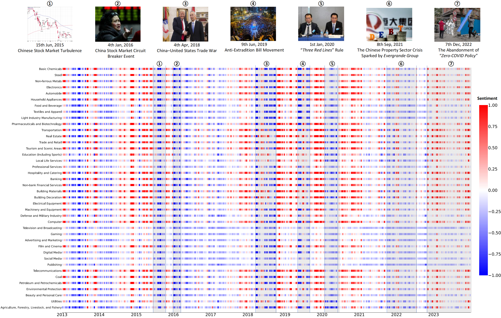

|
Yiwei Liu | 刘益伟 I am a year 4 undergraduate student majoring in Software Engineering at Sichuan University, Chengdu. Previously, I was an intern at Siemens Industry Automation Products Manufacturing and Development base (SEWC), Chengdu. My undergraduate advisors were Prof. Yuankai Wu (伍元凯) and Prof. Xuebin Chen (陈学彬). Currently, I am a research assistant at National University of Singapore advised by Prof. Lin Shao (邵林). |

|
ResearchI'm interested in Computer Vision, Embodied AI, and AI4Science. |

|
MetaFold: Language-Guided Multi-Category Garment Folding Framework via Trajectory Generation and Foundation Model
Haonan Chen, Junxiao Li, Ruihai Wu, Yiwei Liu, Chongkai Gao, Zhixuan Xu, Yiwen Hou, Jingxiang Guo, Zhenyu Wei, Siang Chen, Chenting Wang, Shensi Xu, Jiaqi Huang, Weidong Wang, Lin Shao Submitted to CVPR 2025 Website MetaFold employs language-guided point cloud trajectories for task planning and a foundation model for action prediction, enabling better generalization across garments and instructions. |
|  |
Multi-level Sentiment Analysis for Bond Default Risk based on LLMs
Yiwei Liu, Junbo Wang, Lei Long, Shutong Zhou, Yuyao Wang, Yan Xie, Xi Chen, Xin Li, Ruiting Ma, Xuebin Chen A paper is on going code We proposed a novel analytical paradigm using LLMs for bond default analysis, fine-tuning two BERT models for firm-specific sentiment at the micro-level, and exploring industry-specific sentiment based on RAG at the meso-level. |

|
Lightweight Ensemble Learning Enhances Cardiac MRI Segmentation Performance
Yiwei Liu, Ziyi Wu, Liang Zhong, Lingyi Wen, Yuankai Wu Submitted to MICCAI 2025 Bibtex / code We propose an ensemble learning paradigm, Streaming, to enhance end-slice accuracy while maintaining near-SOTA DSC performance on a cardiac MRI dataset. |
Award
|
Visitors |